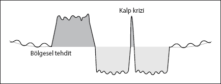

Kalp krizi
Hayatta en korktuğumuz, en fazla ölüme sebebiyet veren ve stresle en çok ilişkilendirilen hastalık belki de kalp krizi. Son yıllarda kolesterol ve kalp krizi arasındaki ilişki doktorlar arasında tartışıladursun, şüphesiz stresin kalp krizi üzerindeki etkisi herkesçe kabul edilen bir gerçek.
Peki, gerçekten stres nasıl kalp krizine sebep oluyor? Stres kalbi mi bozuyor?
Ya da şöyle bir soru soralım: Siz hiç emekli olduktan kısa süre sonra ya da sorunları tam çözülmüş ve rahata ermişken, 6 ay-1 sene içerisinde kalp krizi geçiren birini duydunuz mu?
Duyduğunuzdan eminim. Birazcık araştırmayla kalp krizlerinin çok önemli bir kısmının bu dönemlerde yaşandığını bulabilirsiniz. Özellikle ordudan emekli olan generallerimizin ya da iş hayatında çok zor süreçler yaşadıktan sonra daha sakin bir hayata geçen iş adamlarının kalp krizi geçirdiklerini sıkça okuyabilirsiniz. Kalp krizleri genelde stresin tavan yaptığı, her şeyin zor olduğu dönemde değil, bir şeylerin çözüme kavuştuğu, insanın sonunda rahatladığı dönemde yaşanır. Gelin bunun nedenini irdeleyelim...
Aslında beynin kalp krizini yaşatmasının pek çok farklı nedeni ve senaryosu bulunuyor. Ancak en yaygın olanı “bölgesel tehdit”le ilgili. Biraz önce kullandığımız şekil üzerinde kalp krizinin en yaygın senaryolarından birini açıklamaya çalışalım.

Hayatımızda “bölgesel tehdit” içeren, çok dramatik, yalnız olduğumuz, bize şok yaşatan, çaresiz kaldığımız bir olay ya da olaylar silsilesi gerçekleşiyor. Mevcut tıp böyle bir durumu “aşırı stres” olarak nitelendiriyor. Aslında bu tepkinin gerçekleşmesi için beynimizin olayı “bölgesel tehdit” olarak algılaması ve ilgili programı başlatması gerekiyor.
Bölgesel tehditler “bölgeniz” olarak değerlendirilebilecek her durumu kapsayabilir. İş hayatında yaşanan iflas, işten çıkarılma, çok önemli bir yakını kaybetme gibi konular beynimiz tarafından “bölgesel tehdit” olarak algılanabiliyor.
Stres dönemi
Tüm tehditlerde olduğu gibi beynimizin böyle bir duruma verdiği tepki yine ilkel. Eğer bölgemiz başkaları tarafından tehdit edilirse, güçlü olmalı ve bir an önce yabancıları bölgemizden çıkarmalıyız. Beynimizin bize yardım etme şekli, güçlü ve daha enerjik olmamız adına daha fazla kan akışı sağlamak ve bunun için kalbi besleyen “koroner arterleri” genişletmek. Canlı bir hayvan tehdidine karşı verdiği ani tepki kalbi daha hızlı çalıştırmakken, burada arterlerin duvarlarını inceltmek suretiyle genişleterek kan “debisini” yükseltmeyi seçiyor.
Çözüm sonrası
Bölgesel tehdit çözülür çözülmez, stres dönemi boyunca inceltilen arterlerin, çözüm sonrasında eski haline getirilmesi gerekiyor. İşte burada karaciğerde üretilen kolesterol devreye girerek inceltilen duvarları onarıyor. Zaten, sorun çözüldüğü için bu sırada, psikolojimiz oldukça rahatlamış, iyileşme döneminin en tipik belirtilerinden olan yorgunluğun etkisindeyiz.
İyileşme krizi = Kalp krizi
Rahatça dinlenme fazının tam ortasında bir dönemde beynimiz bizi hiç beklenmedik şekilde (bu kitabı okumayan biri için beklenmedik tabii) “iyileşme krizi” ya da “stres testine” tabi tutuyor. Bir anda kendimizi çözüm öncesi yaşadığımız gibi stresli, endişeli, soğuk soğuk terlediğimiz kötü bir krizin ortasında buluveriyoruz. Bildiğiniz kalp krizinden bahsediyorum.
Biraz önce bu testin ana amacının, çözüm sonrasında beyinde oluşan fazla sıvının atılması ve normale dönüş öncesi son bir “stres testi” olduğunu söylemiştik. Krizin ne kadar şiddetli olacağı, stres döneminde yaşanan “stresin” büyüklüğüne ve bu dönemin ne kadar zaman sürdüğüne göre değişiyor. Büyük duyguların yaşandığı, uzun süren stres dönemlerinin testi ne yazık ki çok sert geçerek ölümlere yol açabiliyor.
Sizinle paylaştığım bu süreç, kalp krizi çeşitlerinden sadece bir tanesi. Kitabımızın kapsamı açısından konunun detaylarını burada bırakmayı doğru buluyorum.
Bu bölümden öğreneceğimiz en önemli ders, çok zorlu bir iş döneminden çıktıktan sonra beynimizin biyolojik bir programı test edebileceğini bilmek ve böyle bir sorunla karşı karşıya kaldığımızda, bunun sadece ve sadece bir “iyileşme stres testi” olduğunu hatırlamak. Bununla beraber, bu testin şiddetini azaltmak amacıyla, stresli dönemlerde terapi (özellikle de tekniklerimiz) stresin kademeli olarak azaltılması açısından çok yararlı olacaktır. Bununla beraber, stres döneminden aniden çıkmak yerine, yine kademeli bir şekilde “sorunu çözmeli”, çok keskin çizgilerde bir hayat değişiminde olmaktan kaçınmalıyız.
Şimdi kalpten biraz daha aşağıya inerek sindirim sistemimizi kısaca inceleyelim...